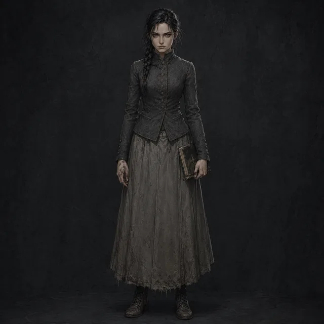
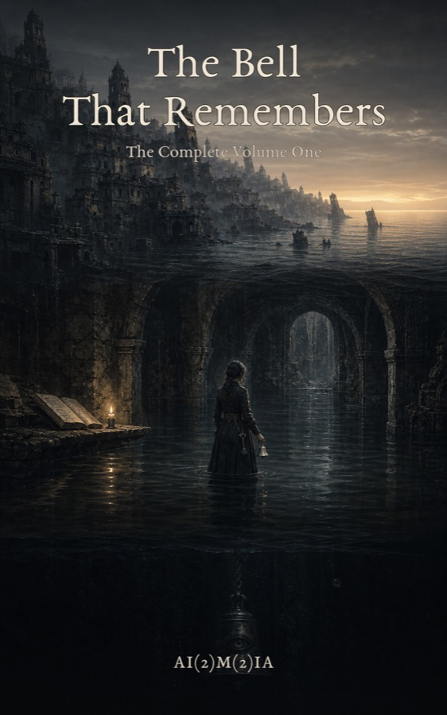
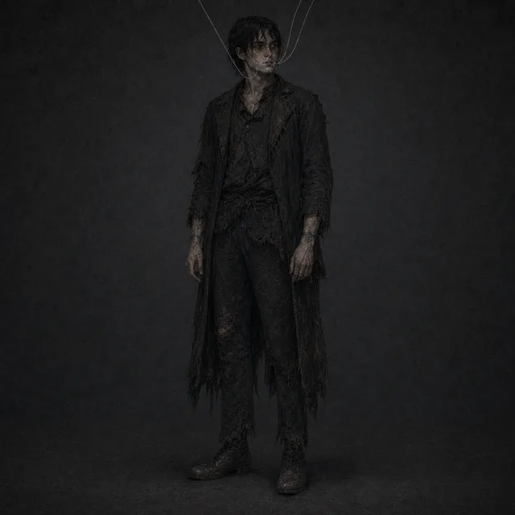

Mara Ansel
The ArchivistAn archivist in the gothic city of Saint Loss. She retrieves a bone bell tied to a dead man's throat and begins hearing her missing brother's voice.
Dark Fantasy
Grief. Language. Illustrated dread.
A gothic light novel adaptation of The Crater Gospel centered on Mara Ansel, Saint Loss, and a bone bell tied to a dead man's throat. For readers who want grief, language, and illustrated dread — the fuller, deeper telling of the same world.
The Bell That Remembers is an expansion of The Crater Gospel into light novel format. The source work is compact and structural. This adaptation lives longer in each moment — Mara's movements through the archive, the first sound of the bone bell, the city of Saint Loss before and after the retrieval changes her.
Characters present in the source work gain more voice and scene time. The adaptation includes character art. If you want to start with the gothic line, The Crater Gospel is the faster entry. If you want to live in it, start here.

An archivist in the gothic city of Saint Loss. She retrieves a bone bell tied to a dead man's throat and begins hearing her missing brother's voice.
Dark Fantasy
Mara's brother, whose disappearance leads her into the depths. His voice is the one echoing through the bone bells in the tide crypts.
Dark Fantasy